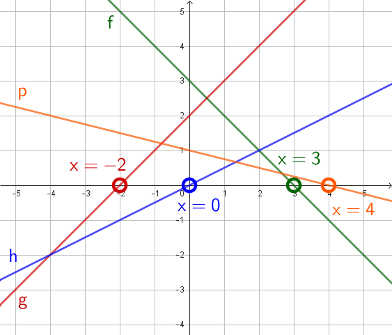
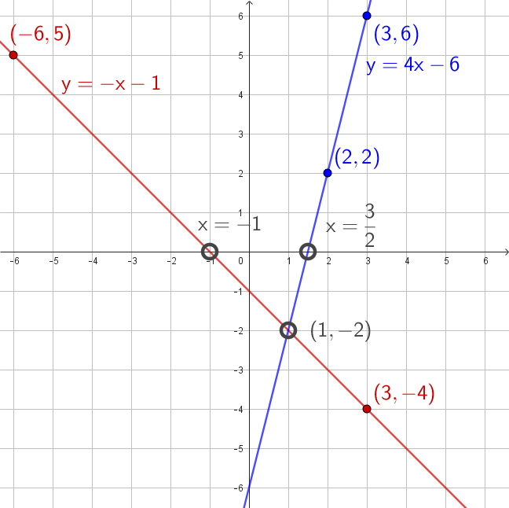

MA9 Jakso 1: Kertaustehtävien malliratkaisut
Kertaustehtäviä 1
Kertaustehtävä 1
Tarkastellaan funktiota \(\mathsf{p(x) = 7x +3}\). Mikä on funktion
a) nimi
\(\mathsf{p}\)
b) lauseke
\(\mathsf{7x+3}\)
c) muuttuja?
\(\mathsf{x}\)
Kertaustehtävä 2
Tarkastellaan merkintää \(\mathsf{k(4) = 6 \cdot 4 - 2 = 22}\). Mikä on
a) funktion nimi
\(\mathsf{k}\)
b) muuttujan arvo
\(\mathsf{4}\)
c) funktion arvo?
\(\mathsf{22}\)
Kertaustehtävä 3
Laske funktion \(\mathsf{f(x) = 3x - 4}\) arvo, kun muuttuja x saa arvon
a) \(\mathsf{x = 3}\)
\(\mathsf{f(3) = 3 \cdot 3 - 4 = 9 - 4 = 5}\)
b) \(\mathsf{x = -5}\)
\(\mathsf{f(-5) = 3 \cdot (-5) - 4 = -15 - 4 = -19}\)
c) \(\mathsf{x = 0}\)
\(\mathsf{f(0) = 3 \cdot 0 - 4 = 0 - 4 = -4}\)
d) \(\mathsf{x = 12}\)
\(\mathsf{f(12) = 3 \cdot 12 - 4 = 36 - 4 = 32}\)
Kertaustehtävä 4
Millä muuttujan x arvolla funktio \(\mathsf{g(x) = -4x + 2}\) saa arvon
a) \(\mathsf{-2}\)
\(\begin{align}\mathsf{g(x)} &= \mathsf{-2}\\ \mathsf{-4x+2} &= \mathsf{-2} &&\mathsf{\|-2}\\ \mathsf{-4x} &= \mathsf{-4} &&\mathsf{\|:(-4)}\\ \mathsf{x} &= \mathsf{1}\end{align}\)
b) \(\mathsf{6}\)
\(\begin{align}\mathsf{g(x)} &= \mathsf{6}\\ \mathsf{-4x+2} &= \mathsf{6} &&\mathsf{\|-2}\\ \mathsf{-4x} &= \mathsf{4} &&\mathsf{\|:(-4)}\\ \mathsf{x} &= \mathsf{-1}\end{align}\)
c) \(\mathsf{2}\)
\(\begin{align}\mathsf{g(x)} &= \mathsf{2}\\ \mathsf{-4x+2} &= \mathsf{2} &&\mathsf{\|-2}\\ \mathsf{-4x} &= \mathsf{0} &&\mathsf{\|:(-4)}\\ \mathsf{x} &= \mathsf{0}\end{align}\)
d) \(\mathsf{0}\)
\(\begin{align}\mathsf{g(x)} &= \mathsf{0}\\ \mathsf{-4x+2} &= \mathsf{0} &&\mathsf{\|-2}\\ \mathsf{-4x} &= \mathsf{-2} &&\mathsf{\|:(-4)}\\ \mathsf{x} &= \mathsf{\dfrac{2}{4}}\\ \mathsf{x} &= \mathsf{\dfrac{1}{2}}\end{align}\)
Kertaustehtävä 5
Täydennä taulukko.
| x | \(\mathsf{f(x) = -2x}\) | \(\mathsf{g(x) = x^2-10}\) | \(\mathsf{h(x) = 3x-2}\) |
|---|---|---|---|
| 1 | \(\mathsf{f(1) = -2}\) | \(\mathsf{g(1) = -9}\) | \(\mathsf{h(1) = 1}\) |
| 2 | \(\mathsf{f(2) = -4}\) | \(\mathsf{g(2) = -6}\) | \(\mathsf{h(2) = 4}\) |
| 3 | \(\mathsf{f(3) = -6}\) | \(\mathsf{g(3) = -1}\) | \(\mathsf{h(3) = 7}\) |
| 4 | \(\mathsf{f(4) = -8}\) | \(\mathsf{g(4) = 6}\) | \(\mathsf{h(4) = 10}\) |
| 5 | \(\mathsf{f(5) = -10}\) | \(\mathsf{g(5) = 15}\) | \(\mathsf{h(5) = 13}\) |
| 0 | \(\mathsf{f(0) = 0}\) | \(\mathsf{g(0) = -10}\) | \(\mathsf{h(0) = -2}\) |
| -1 | \(\mathsf{f(-1) = 2}\) | \(\mathsf{g(-1) = -9}\) | \(\mathsf{h(-1) = -5}\) |
Kertaustehtävä 6
Piirrä funktion kuvaaja.
a) \(\mathsf{f(x) = 2x+1}\)
b) \(\mathsf{g(x) = -2x+3}\)
c) \(\mathsf{h(x) = 3x-2}\)
d) \(\mathsf{p(x) = -3x-4}\)
Kertaustehtävä 7
Mitä tehtävän 6 suorista on
a) nousevia
\(\mathsf{f(x) = 2x+2}\) ja \(\mathsf{h(x) = 3x-2}\)
b) laskevia
\(\mathsf{g(x) = -2x+3}\) ja \(\mathsf{p(x) = -3x-4}\)
c) Miten voit päätellä suoran yhtälöstä, onko suora nouseva vai laskeva?
Suora on nouseva, jos kulmakerroin on positiivinen ja laskeva, jos kulmakerroin on negatiivinen.
Kertaustehtävä 8
Määritä funktioiden f, g, h ja p kuvaajista.
a) funktion f yhtälö
\(\mathsf{f(x) = 3x+1}\)
b) funktion g yhtälö
\(\mathsf{g(x) = -x+4}\)
c) funktion h yhtälö
\(\mathsf{h(x) = 2x-5}\)
d) funktion p yhtälö
\(\mathsf{p(x) = -2x-3}\)
e) funktion g nollakohta
Leikkauskohta: \(\mathsf{x = 4}\), leikkauspiste: \(\mathsf{(4, 0)}\)
f) funktioiden g ja h leikkauspiste
\(\mathsf{(3, 1)}\)
g) \(\mathsf{p(-3) = 3}\)
h) \(\mathsf{f(1) = 4}\)
i) \(\mathsf{g(5) = -1}\)
j) x, kun \(\mathsf{h(x) = -1}\)
\(\mathsf{x = 2}\)
k) x, kun \(\mathsf{p(x) = 3}\)
\(\mathsf{x = -3}\)
l) x, kun \(\mathsf{g(x) = 4}\)
\(\mathsf{x = 0}\)
Kertaustehtävä 9
Piirrä funktion kuvaaja.
a) \(\mathsf{f(x) = -x+3}\)
b) \(\mathsf{g(x) = x+2}\)
c) \(\mathsf{h(x) = \dfrac{1}{2}x}\)
d) \(\mathsf{p(x) = -\dfrac{1}{4}x + 1}\)
Kertaustehtävä 10
Määritä tehtävän 9 kuvaajien nollakohdat graafisesti.
Kertaustehtävä 11
Määritä funktion nollakohdat algebrallisesti.
a) \(\mathsf{f(x) = 2x-4}\)
\(\begin{align}\mathsf{f(x)} &= \mathsf{0}\\ \mathsf{2x-4} &= \mathsf{0} &&\mathsf{\|+4}\\ \mathsf{2x} &= \mathsf{4} &&\mathsf{\|:2}\\ \mathsf{x} &= \mathsf{2}\end{align}\)
b) \(\mathsf{g(x) = -x+6}\)
\(\begin{align}\mathsf{g(x)} &= \mathsf{0}\\ \mathsf{-x+6} &= \mathsf{0} &&\mathsf{\|+x}\\ \mathsf{6} &= \mathsf{x}\end{align}\)
c) \(\mathsf{h(x) = -4x-6}\)
\(\begin{align}\mathsf{h(x)} &= \mathsf{0}\\ \mathsf{-4x-6} &= \mathsf{0} &&\mathsf{\|+6}\\ \mathsf{-4x} &= \mathsf{6} &&\mathsf{\|:(-4)}\\ \mathsf{x} &= \mathsf{-\dfrac{6}{4}}\\ \mathsf{x} &= \mathsf{-\dfrac{3}{2}}\end{align}\)
Kertaustehtävä 12
Onko piste (6, -8) funktion kuvaajalla?
a) \(\mathsf{f(x) = -3x + 8}\)
\(\mathsf{f(6) = -3 \cdot 6 + 8 = -18+8 = -10}\)
Vastaus: Piste ei ole funktion f kuvaajalla.
b) \(\mathsf{g(x) = -2x + 4}\)
\(\mathsf{g(6) = -2 \cdot 6 + 4 = -12+4 = -8}\)
Vastaus: Piste on funktion g kuvaajalla.
c) \(\mathsf{h(x) = 8x - 52}\)
\(\mathsf{h(6) = 8 \cdot 6 - 52 = 48 - 52 = -4}\)
Vastaus: Piste ei ole funktion h kuvaajalla.
Kertaustehtävä 13
Määritä funktioiden kuvaajien leikkauspiste algebrallisesti, kun
a) \(\mathsf{f(x) = 3x-7}\) ja \(\mathsf{g(x) = -x+5}\)
\(\begin{align}\mathsf{f(x)} &= \mathsf{g(x)}\\ \mathsf{3x-7} &= \mathsf{-x+5} &&\mathsf{\|+x}\\ \mathsf{4x-7} &= \mathsf{5} &&\mathsf{\|+7}\\ \mathsf{4x} &= \mathsf{12} &&\mathsf{\|:4}\\ \mathsf{x} &= \mathsf{3}\end{align}\)
\(\mathsf{y = g(3) = -3+5 = 2}\)
Vastaus: Kuvaajat leikkaavat pisteessä \(\mathsf{(3, 2)}\).
b) \(\mathsf{f(x) = 6x+23}\) ja \(\mathsf{g(x) = \dfrac{1}{2}x+1}\)
\(\begin{align}\mathsf{f(x)} &= \mathsf{g(x)}\\ \mathsf{6x+23} &= \mathsf{\dfrac{1}{2}x+1} &&\mathsf{\|\cdot 2}\\ \mathsf{12x+46} &= \mathsf{x+2} &&\mathsf{\|-x}\\ \mathsf{11x+46} &= \mathsf{2} &&\mathsf{\|-46}\\ \mathsf{11x} &= \mathsf{-44} &&\mathsf{\|:11}\\ \mathsf{x} = \mathsf{-4}\end{align}\)
\(\mathsf{y = g(-4) = \dfrac{1}{2} \cdot (-4) + 1 = -2 + 1 = -1}\)
Vastaus: Kuvaajat leikkaavat pisteessä \(\mathsf{(-4, -1)}\).
Kertaustehtävä 14
Määritä suoran yhtälö, kun suora kulkee pisteiden
a) \(\mathsf{(-6, 5)}\) ja \(\mathsf{(3, -4)}\)
b) \(\mathsf{(2, 2)}\) ja \(\mathsf{(3, 6)}\) kautta.
Piirretään pisteet ja suorat koordinaatistoon. Määritetään suoran yhtälö kuvaajasta.
c) Missä pisteessä suorat leikkaavat toisensa?
\(\mathsf{(1, -2)}\)
d) Määritä suorien nollakohdat.
\(\mathsf{x = -1}\) ja \(\mathsf{x = \dfrac{3}{2}}\)
Ainakin suoran \(\mathsf{y = 4x - 6}\) nollakohdan määrittäminen olisi hyvä tehdä myös algebrallisesti:
\(\begin{align}\mathsf{4x-6} &= \mathsf{0} &&\mathsf{\|+6}\\ \mathsf{4x} &= \mathsf{6} &&\mathsf{\|:4}\\ \mathsf{x} &= \mathsf{\dfrac{6}{4}}\\ \mathsf{x} &= \mathsf{\dfrac{3}{2}}\end{align}\)